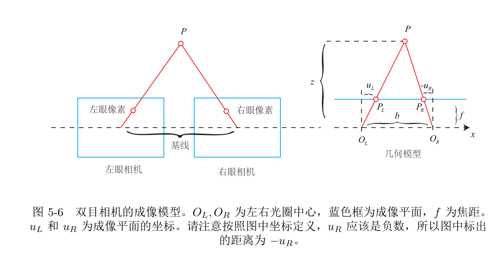

双目相机模型及测距原理
根据单目相机成像模型，像素点 - 相机光心 - 空间点三个点位于同一条直线上，而该直线上的所有点都可以被投影到同一像素点的位置。因此，这个投影过程丢失了坐标点的深度信息，所以仅根据一幅图像无法获取像素点的深度信息和空间位置。双目相机根据同一坐标点在两幅图像中的像素坐标差异，估计每一个像素的深度。
双目相机模型
双目相机模型如图所示：

根据相似三角形定理，可以得到：
得到对应像素点的深度为：
上式中，
- $f$：焦距（米）
- $b$：表示基线，即左右相机光圈中心的距离（米）
- $u_{L}-u_{R}$：同一坐标点在两幅图像中的视差，即左右图横坐标之差，单位是像素
视差越大，距离越近。基线越长，可测得的距离越远。
本博客所有文章除特别声明外，均采用 CC BY-NC-SA 4.0 许可协议。转载请注明来自 椰汁橙的烂笔头！